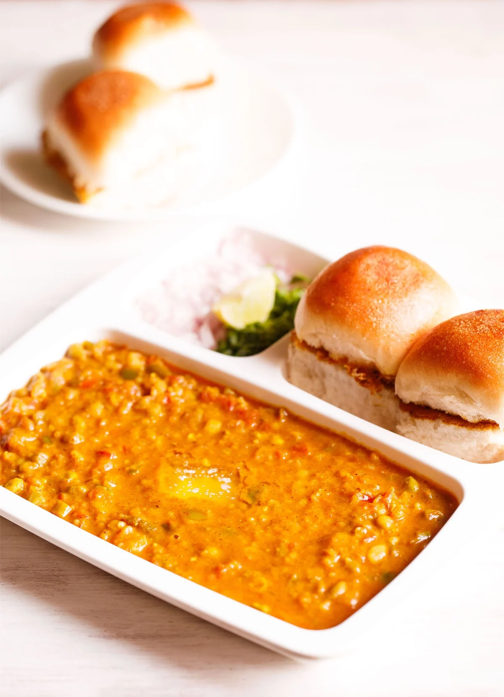

Recipes

Description
Pav bhaji is an iconic dish which is hugely popular as street food all over India.
‘pav’ means bread rolls and ‘bhaji’ refers to vegetables or a dry/gravy style mixed veggie dish. Since this particular combination has both these being served together, the dish is well-known under the sobriquet Pav Bhaji.
So, you must be thinking as to what really brings in the uniqueness in the bhaji or the mix of tangy, spiced vegetables in the Pav Bhaji Recipe? It is the special spice blend called the Pav Bhaji Masala that makes the difference.
Ingredients
- Mixed Vegetable
- Green Peas
- Pav BHaji Masala
- Butter
- Pav
Steps
- Rinse, peel and chop the veggies. You will need 1 cup chopped cauliflower, 1 cup chopped carrot, 3 medium sized potatoes (chopped) and ⅓ cup chopped french beans
- Add all the above chopped veggies in a 3 litre stovetop pressure cooker. Also add 1 cup green peas (fresh or frozen)
- Add 2.25 to 2.5 cups water
- Pressure cook the veggies for 5 to 6 whistles or for about 12 minutes on medium heat
- When the pressure settles down on its own, open the cooker and check if the veggies are fork tender, softened and cooked well
- Set aside the vegetables with the cooked water (broth/stock) in the cooker itself
- Heat a frying pan or kadai (wok). You can also use a large tawa or a skillet. Add 2 to 3 tablespoons butter. You can use amul butter or any brand of butter. The butter can be salted or unsalted
- Let the butter melt
- As soon as the butter melts, add 1 teaspoon cumin seeds
- Let the cumin seeds crackle and change their color.
- Then add ½ cup chopped onions.
- Mix onions with the butter and sauté on a low to medium heat.
- Then add 1 to 2 green chilies (chopped), about 1 teaspoon chopped green chillies.
- Saute 2 cups finely chopped tomatoes. Swap canned tomatoes if you do not have fresh tomatoes.Sauté until the tomatoes become soft, mushy and you see butter releasing from the sides. This takes about 6 to 7 minutes on a low to medium heat.
- When the tomatoes have softened, add ½ cup finely chopped capsicum (green bell pepper). Sauté for 2 to 3 minutes.
- Add 1 teaspoon turmeric powder and 1 teaspoon Kashmiri red chilli powder.
- Add 2 to 3 tablespoons Pav bhaji Masala Powder. Depending on how instense is the aroma and flavor of pav bhaji masala, you can add it in less or more proportions.
- Add the cooked veggies. You can choose to mash the veggies before you add them in the pan or skillet. Stir well
- Add all of the stock or water from the pressure cooker in which the veggies were cooked.
- With a potato masher, begin to carefully mash the veggies directly in the pan. Mix well
- If the bhaji looks dry and then add some water. The consistency is neither very thick nor thin.
- When the bhaji is simmering, you can pan fry the bread rolls so that you serve the pav with steaming hot bhaji. Cut through the bread roll from the center so that you get two equal halves.
- Heat a tawa or skillet or a shallow frying pan. Keep the heat to a low and then add 1 to 2 tablespoons butter or more if you like.Then place the pav on the butter.
- Press with a spatula and rotate the pav all over the melted butter so that the pav absorbs the butter together with the ground spices.
- Serve piping hot Bhaji topped with a bit of butter paired with the lightly toasted pav and a side of finely chopped onions, coriander leaves and lemon wedges.